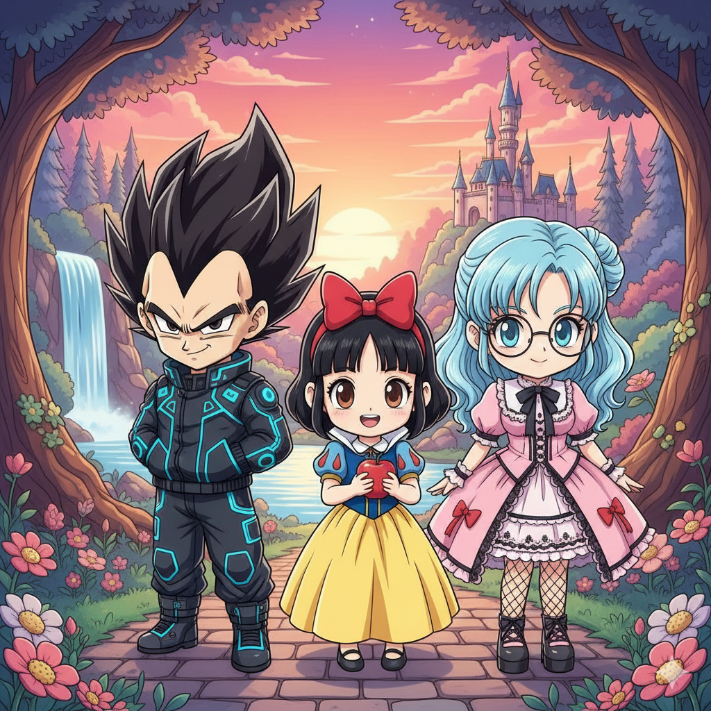

IA Generativa
Explora mis creaciones con inteligencia artificial
Herramientas que Utilizo
Stable Diffusion
Arte conceptual y generación de imágenes
Leonardo.Ai
Arte digital de alta calidad
Nano Banana
Prototipado visual rápido
Galería Completa

Demonio Reflejado
Generado con Nanobanana. Sujeto frente a una ventana.

Chica Anime
Creación con Stable Diffusion, Chica detallada con entorno calido.

Persona IA Generado
Generado con Leonardo.Ai. Diseño de persona con estilo cyberpunk.
Videos con IA - Próximamente
Sección en desarrollo. Próximamente podrás ver mis creaciones de video generado con IA.
Prompts de IA - Próximamente
Sección en desarrollo. Próximamente compartiré mis prompts y técnicas para generar contenido con IA.
Galería de Imágenes
Demonio Reflejado
Generado con Nanobanana. Sujeto frente a una ventana.
Chica Anime
Creación con Stable Diffusion, Chica detallada con entorno calido.
Persona IA Generado
Generado con Leonardo.Ai. Diseño de persona con estilo cyberpunk.

Paisaje Japonés
Paisaje tradicional japonés con cerezos y montañas, generado con Stable Diffusion.

Personaje Propio Cyberpunk
Generado con Nanobanana. Personaje completamente personalizado.

Personajes Anime Generador
Generado con DALL·E. Diseño de personajes animados.
Videos con IA - Próximamente
Esta sección está actualmente en desarrollo. Próximamente podrás explorar mis creaciones de video generado con inteligencia artificial utilizando herramientas como Veo 3, Pika Labs y Stable Video.
Disponible próximamente
Prompts de IA - Próximamente
Esta sección está actualmente en desarrollo. Próximamente compartiré mis prompts, técnicas y estrategias para generar contenido de calidad con diferentes modelos de IA.
Disponible próximamente